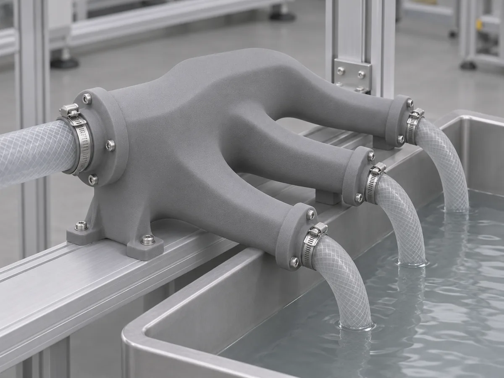
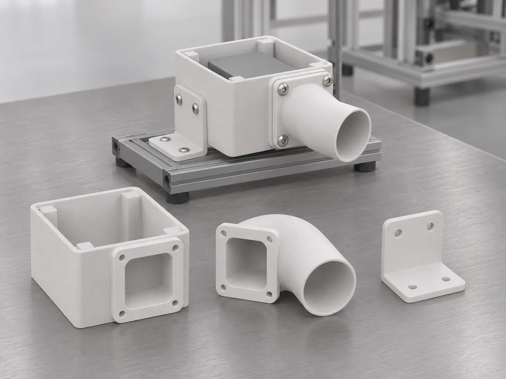
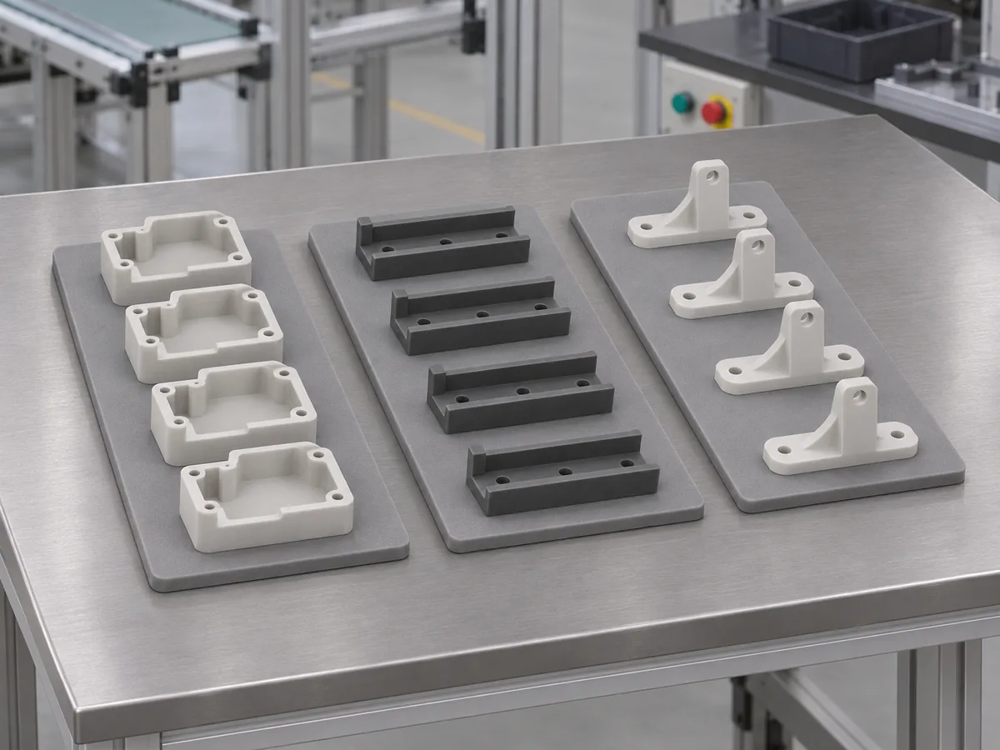

Diciassette famiglie di parti, dal cambio formato ai pannelli di grigliatura. Per ciascuna: il problema che costa oggi, cosa produciamo e in che lotti, materiale e finiture, i settori.
Ogni macchina custom porta decine di attrezzi dedicati, fresati dall'alluminio o dal POM: il costo si nasconde nelle ore di officina e nel ritardo che sposta il collaudo.
Cosa facciamo
Dita di presa, nidi porta-pezzo, pallet e fixture in PA2200 sinterizzato, dedicati alla commessa, in lotti da 1 a 50, riordinati identici dal file per tutta la vita della macchina.
Il set formato oggi nasce fresato dal pieno in POM o PA6: ore macchina per ogni stella, una coclea che è un lavoro a sé, e a ogni nuovo flacone del cliente si ricomincia.
Cosa facciamo
Stelle, coclee, tazze, piastre e guide di formato in PA2200: un set per ogni prodotto del vostro cliente, da 1 a 50 set, prodotti insieme nello stesso lotto alla firma dell'ordine.
Il fine-braccio tradizionale è un assieme di piastre lavorate, raccordi e viteria: ogni geometria di presa nuova è un ciclo di officina, e ogni grammo in punta limita il robot.
Cosa facciamo
Corpi pinza monoblocco con il canale del vuoto dentro e dita a formato in PA2200, interfacce cedevoli in TPU 90A: la nuova geometria di presa entra in produzione in giorni, in lotti da 1 a 50.
A cento pezzi l'anno il carter ha tre strade, tutte storte: uno stampo che si ripaga in dieci anni, una lamiera che non si adatta all'elettronica, una fresatura che costa più della scheda che protegge.
Cosa facciamo
Carter e coperchi con clip, torrette e passacavi già nella geometria, in PA2200, da dieci a cinquecento l'anno; i ricambi delle serie fuori produzione dal file o dal rilievo 3D.
Il condotto latte oggi è tre stampati incollati o un tubo piegato con i suoi raccordi, e l'imbuto ha uno stampo che si ripaga solo se il restyling aspetta.
Cosa facciamo
Condotti, imbuti e convogliatori in un pezzo solo, in PA2200 con dichiarazione del produttore per il contatto alimentare (Reg. (UE) 10/2011) a livello di materiale, con la migrazione da verificare sul pezzo finito, in serie da 100 a 1.000 pezzi l'anno con le loro varianti.
Oggi il tamburo a vuoto è un tornito con decine di fori profondi, tappati e raccordati, oppure un assieme di dischi e distanziali che perde dove non deve.
Cosa facciamo
Tamburi a vuoto, rulli aspiranti e rotori di dosaggio in PA2200 con i canali interni già nel corpo: da 1 a 50 pezzi, fino a 700 mm in un pezzo, senza foratura profonda né incollaggi.
Vantaggi
Canali di ogni sezione
Fino a 700 mm
Leggero sull'albero

Tav.
A07 · rendering
Processo
SAF · PP · F0
SettoriAcque e fluidi
Trattamento acque
Crepine, ugelli di controlavaggio, diffusori e distributori in polipropilene: un pezzo unico dove oggi ne incollate tre.
La crepina che montate oggi è un assieme di corpo, ghiera e filetto incollati o saldati: ogni giunzione è un punto di perdita che aspetta, e lo stampo per la variante giusta non si ripaga mai.
Cosa facciamo
Crepine, ugelli di controlavaggio, diffusori e distributori in polipropilene sinterizzato, con slot da 2 mm e filetto nello stesso pezzo: su disegno, senza stampo, in serie ricorrente a lotto tracciato.
Sopra i 380 mm il pezzo si taglia e si incolla, o cambia fornitore; e la serie da cinquanta a cinquecento pezzi sulle macchine da prototipo diventa un mese di calendario.
Cosa facciamo
Camera 700 × 380 × 580 mm: il corpo da 600 mm entra intero, oppure la serie intera annidata in una macchinata, in PA2200 con finitura da F0 a F3.
Vantaggi
Fino a 700 mm
Nessuna sezionatura
Serie in una macchinata

Tav.
A09 · rendering
Processo
SLS · PA2200, PA11 · FDM · Nylon 12CF
SettoriSviluppo prodotto
Kit di validazione
Ogni iterazione, un kit completo: collettori, condotti, carter e staffe calcolati e prodotti come un solo lotto.
L'officina interna è piena quando serve, lo stampo prima della serie non ha senso, e il service generico tratta ogni parte dell'assieme come un ordine a sé: dieci offerte, dieci consegne, dieci qualità diverse.
Cosa facciamo
Il kit di validazione, collettori, condotti, carter e staffe, quotato e prodotto come un solo lotto, annidato nella camera da 700 × 380 × 580 mm: alla prossima iterazione si riordina identico, o modificato dove la prova lo chiede.
Un allestimento vive in serie da decine di veicoli, ogni commessa ha le sue varianti e la flotta resta in servizio per vent'anni: su numeri così lo stampo non si ammortizza mai.
Cosa facciamo
Plance, coperture elettronica, supporti fanali e cornici in PA11 o PA2200, verniciati a liquido 2K nel colore del cliente: costo per pezzo stabile dal primo all'ultimo veicolo della commessa.
Il camion è di serie, l'allestimento no: torre faro, segnalatori, presa idrica e carter vivono in serie da decine di pezzi, dove nessuno stampo si ammortizza.
Cosa facciamo
La distinta additive letta sul modello CAD dell'allestimento: basi, cornici e carter in PA12 con finitura 2K, Ultem 9085 dove il capitolato chiede il fuoco a livello di materiale, ogni componente ricambio digitale a vita flotta.
Ogni prodotto e ogni contenitore chiedono le loro stelle, guide e centratori: serie piccole per definizione, un attrezzaggio dedicato per variante, e ogni pezzo che entra in linea deve arrivare con le sue carte.
Cosa facciamo
Stelle, coclee e guide per il trasporto fiale in PA2200, con il dossier del materiale, la finitura da F1 al grado cleanroom e lotto e job riportati su ogni pezzo: il set di formato si riordina identico dal file.
Lo strumento prodotto in decine o centinaia l'anno sta dove lo stampo non si ripaga e la fresatura dal pieno costa come il gruppo che serve; e la serie speciale, con il guscio diverso, non la fa nessuno.
Cosa facciamo
Carter con clip e torrette, guide scheda e rack porta-campione in PA2200, con la maglia e le sedi che servono, in un lotto solo, da dieci a cinquecento l'anno, finitura scelta per la funzione.
Vantaggi
Clip e passacavi
Nessun minimo
Finitura a scelta

Tav.
A14 · rendering
Processo
SLS · PA2200 · SAF · PP
SettoriSviluppo prodotto
Formato e serie per i service
Camera 700 × 380 × 580 mm e serie da 1 a 500 pezzi per service, modellerie e studi: lavoriamo dietro di voi, il vostro cliente resta vostro.
Il vostro parco copre il prototipo; poi arriva il corpo lungo mezzo metro o la richiesta di trecento pezzi in poliammide, e restano due strade: dire di no, o un portale dove siete un ordine fra mille.
Cosa facciamo
Camera 700 × 380 × 580 mm per la poliammide, una macchina dedicata al polipropilene, con la capacità verificata sulla commessa, e serie da 1 a 500 pezzi, con la risposta tecnica scritta prima del pezzo: lavoriamo dietro di voi, il vostro cliente resta vostro.
scheda di settore, condivisa con Allestimenti veicolo
Problema, soluzione, vantaggi
Il problema
Plancia, coperture elettronica e condotti d'aria di cabina sono gruppi multipezzo: più codici a distinta, più assemblaggio e più punti di guasto, su serie da decine di veicoli.
Cosa facciamo
Plance, coperture elettronica, staffe strumentazione e condotti d'aria ottimizzati nella portata, in PA2200 o PA11 con finitura 2K: gruppi multipezzo che diventano monoblocco, pronti al montaggio.
Condotto di aspirazione turbo, griglie intercooler, convogliatori e supporti fanali in PA11, PA12 e Nylon 12CF, montati su un'auto da rally in campionato.
Ricambi e miglioramenti di una vettura in campionato sono pezzi in pochi esemplari che devono reggere la corsa: su numeri così nessuno stampo si ammortizza.
Cosa facciamo
Condotto di aspirazione turbo ottimizzato nella portata, griglie intercooler, convogliatori e supporti fanali in PA11, PA12 e Nylon 12CF, montati su un'auto da rally in campionato.
Il pannello di grigliatura oggi è un telaio da saldare con un inserto da montare, o uno stampo per ogni taglia: la variante per il singolo impianto non si ripaga.
Cosa facciamo
Pannelli forati e fessurati per griglie a nastro, tamburi e griglie a gradini in polipropilene sinterizzato: fori esagonali o conici da 2 mm, occhielli e cerniere integrati, pezzo unico fino a circa 30 cm, in serie ricorrente con riordino identico dal file.
Vantaggi
Fori da 2 mm
Cerniere integrate
Serie ricorrente
Il limite
Sotto i 2 mm no; sopra i 90 °C no; prese d'acqua potabile chiuse; dove l'usura è il problema il polietilene UHMW resiste di più.
1 / 17
Le schede materiale DPG-MAT si ricevono con l'offerta; il certificato del produttore del materiale, dove il capitolato lo chiede. Le schede segnate come bozza sono in attesa di verifica tecnica.
I settori
Le tre pagine di settore
Ogni settore ha la sua pagina, scritta nel vocabolario dei vostri capitolati: il conto economico, le parti, i materiali, un caso, e quando non conviene.